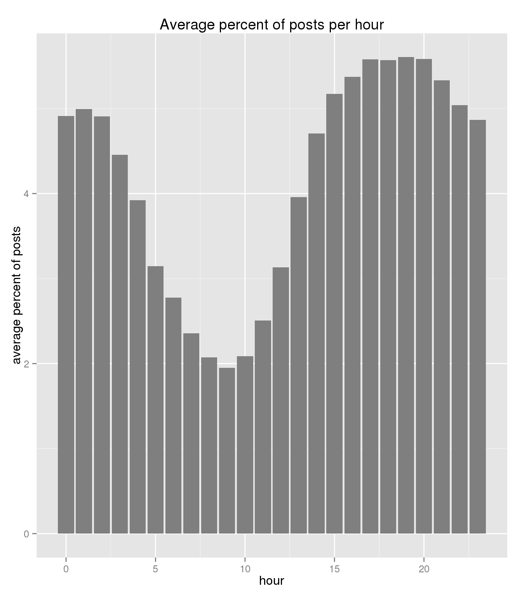

hide forever |
hide once
hide forever |
hide once
We check various aspects and characteristics of the data such as the relative contribution of different topics/subreddits to reddit traffic and overall number of comments. Total number of comments in May 2015 is
##
## Attaching package: 'dplyr'
##
## The following objects are masked from 'package:stats':
##
## filter, lag
##
## The following objects are masked from 'package:base':
##
## intersect, setdiff, setequal, union
##
## Loading required package: methods## [1] 54504410Which subreddits contributed to most number of comments?
db_subreddit <- db_subset %>%
select(subreddit) %>%
collect() %>%
data.frame() %>%
group_by(subreddit) %>%
summarise(percent_posts = n()/all_posts*100)%>%
arrange(desc(percent_posts))
print(slice(db_subreddit,1:5))## Source: local data frame [5 x 2]
##
## subreddit percent_posts
## (chr) (dbl)
## 1 AskReddit 7.769958
## 2 leagueoflegends 2.244193
## 3 nba 1.387401
## 4 funny 1.368542
## 5 pics 1.157567We look at the distribution of relative contribution of posts
w_posts_vec <- collect(db_subreddit) %>% .$percent_posts
q_posts <- w_posts_vec %>% quantile()
print(q_posts)## 0% 25% 50% 75% 100%
## 1.834714e-06 3.669428e-06 1.284300e-05 9.173570e-05 7.769958e+00relative_w_group <- tapply(w_posts_vec, cut(w_posts_vec, breaks=q_posts[3:5]), FUN=sum)
names(relative_w_group) <- c("Q1-Q3","Q4")
print(relative_w_group["Q4"])## Q4
## 99.41172Q4 has more than 99% of the posts - top 25% of subreddits contribute to more than 99% of comments.
What about users? If we ask the same question?
db_user <- db_subset %>%
filter(author != "[deleted]") %>%
select(author) %>%
collect() %>%
data.frame() %>%
group_by(author) %>%
summarise(percent_posts = n()/all_posts*100)%>%
arrange(desc(percent_posts))
w_user_vec <- db_user %>% .$percent_posts
q_users <- w_user_vec %>% quantile()
print(q_users)## 0% 25% 50% 75% 100%
## 1.834714e-06 1.834714e-06 7.338856e-06 2.385128e-05 5.255740e-01relative_w_3quser_group <- tapply(w_user_vec, cut(w_user_vec, breaks=q_users[3:5]), FUN=sum)
names(relative_w_3quser_group) <- c("Q1-Q3","Q4")
print(relative_w_3quser_group["Q4"])## Q4
## 80.52367This means top- 25% of users are responsible to generate 80% of the comments as expected the distribution of users in less skewed.
Now we check the time for number of posts - what is the range of time redditors are most active?
We check the percent post roughly, that is we collect average number of posts that hour and then divide by average number of posts per day for that month
What is the average number of posts per day on May2015?
## [1] 1758207db_post_hour <- db_subset %>%
select(created_utc) %>%
collect() %>%
data.frame() %>%
mutate(hour = hour(as.POSIXct(created_utc,origin = '1970-01-01'))) %>%
group_by(hour) %>%
summarise(percent_posts = n()/31/avg_post_day*100)Now we visualize post per hour
ggplot(data = db_post_hour, aes(x=hour, y=percent_posts)) +
geom_bar(stat="identity", fill = "grey50") +
labs(x = "hour",
y = "average percent of posts",
title = "Average percent of posts per hour")